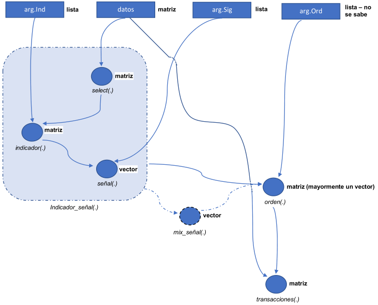

Implementación de indicadores


Sinopsis
Es una breve descripción del flujo de las funciones para realizar backtesting a partir de una estrategia. Y el uso de este para implementación de distintas estrategias de trading.
Estrategia
Se considera una estrategia como una combinación de indicadores y reglas para generar señales para entrar y salir de transacciones. La idea detrás de esto se presenta en la siguiente gráfica:

Esto permite realizar distintas modificaciones a la estrategia:
Si se desea realizar una estrategia con mas de una combinación indicador-señal. Se puede generar varias señales (con la función Indicador_señal(.)) y luego con alguna función ( mix_señal(.)) combinarlas para convertirla en una señal.
A partir de la señal generada se utiliza la función orden(.) la cual puede variar. Por ejemplo: puede ser ordenes normales, ordenes con stop loss, ordenes con stop loss movil, dependiendo de la que quede mejor con la estrategia. (Nota: no todas les funciona el mismo sistema de ordenes, por ejemplo, bandas de bollinger no funciona muy bien con un stop loss movil ya que es un indicador para identificar señales en rango (choppy market) es mejor un stop loss fijo, funcionando como una especie de support)
Y por ultimo, la salida de la función orden(.) se pasa por transacciones, la cuál computa el backtesting de la estrategia.
Algo importante para notar en este caso es que las tres funciones principales Indicador_señal(.), orden(.) y transacciones(.) necesitan de los datos, esto permite poder utilizar en cada paso información diferente de los datos, es claro que en el calculo de un indicador se utiliza diferente información, al igual que la función de orden(.) que por construcción puede utilizar cualquier información de los datos, por ejemplo el stop loss movil utiliza el promedio movil ponderado de los close para ir moviendo el valor del stop movil en vez de tomar la serie del close ya que esta esta es mas volátil.
Tabla de especificaciones básicas tbl.specs
En esta tabla se encuentra las especificaciones esenciales para poder programar la estrategia. En ella se encuentra lo siguiente:
- nameInd := Nombre corto y único para llamar la estrategia.
- f := Nombre de la función que calcula los indicadores.
- dat.f := Nombre de la función que selecciona los datos, los cuales entrar como argumento principal a la función f.
- sig.f := Nombre de la función que calcula las señales a partir de la salida de f.
- parms := Parámetros para el calculo del indicador, en forma de lista.
- sig.parms := Parámetros para el calculo de la señal, en forma de lista.
tbl.specs <- tribble(
~nameInd, ~f, ~dat.f, ~sig.f, ~parms, ~sig.parms,
'adx', 'ADX', 'hlc', 'sig.ADXL', list(), list(limit = 25),
'smaTwo', 'SMAtwo', 'cl', 'sig.SMAtwo', list(nfast = 30, nslow = 100), list(),
'bands', 'BBands', 'hlc', 'sig.BBands', list(), list()
)
tbl.specs## # A tibble: 3 x 6
## nameInd f dat.f sig.f parms sig.parms
## <chr> <chr> <chr> <chr> <list> <list>
## 1 adx ADX hlc sig.ADXL <list [0]> <list [1]>
## 2 smaTwo SMAtwo cl sig.SMAtwo <list [2]> <list [0]>
## 3 bands BBands hlc sig.BBands <list [0]> <list [0]>Por el momento son muchas cosas para determinar, pero esto facilita la forma de poder usarlas en la forma actual del código. Si en las columnas parms y sig.parms se dejan listas vacías, el toma los parámetros que tiene por defecto las funciones f y sig.f o pueden variar al antojo (para hacer tunning de la estrategia).
NOTA: Es importante que los nombres de las funciones en la tabla tbl.specs estén cargadas antes de proseguir. La mayoría de funciones para calcular indicadores salen del paquete TTR, por lo tanto es necesario siempre tener cargado este paquete.
indSeg(.) la función Indicador_señal(.)
Esta función genera un vector con las señales producto de un indicador, cuenta con los siguiente parámetros.
args(indSeg)## function (parm = NULL, sigParm = NULL, datos, indName)
## NULLComo se puede ver en los argumentos, es necesario darle la tabla de datos y el nombre del indicador indName (El de la tabla tbl.specs) y opcional se puede dar una lista de parametros para la función del indicador parm, como para la función de la señal sigParm, si no queda los parametros que se encuentran en tbl.specs. Que la función este de este forma nos permite
Archivos
Hay tres códigos los cuales contienen las distintas funciones que configuran el flujo.
read_sheet()
read_sheet() is the main “read” function and should evoke readr::read_csv() and readxl::read_excel(). It’s an alias for sheets_read(). Most functions in googlesheets4 actually start with sheets_. googlesheets4 is pipe-friendly (and reexports %>%), but works just fine without the pipe.
purrr enhances R’s functional programming (FP) toolkit by providing a complete and consistent set of tools for working with functions and vectors. If you’ve never heard of FP before, the best place to start is the family of map() functions which allow you to replace many for loops with code that is both more succinct and easier to read. The best place to learn about the map() functions is the iteration chapter in R for data science.
Installation
# The easiest way to get purrr is to install the whole tidyverse:
install.packages("tidyverse")
# Alternatively, install just purrr:
install.packages("purrr")
# Or the the development version from GitHub:
# install.packages("devtools")
devtools::install_github("tidyverse/purrr")Cheatsheet
Usage
The following example uses purrr to solve a fairly realistic problem: split a data frame into pieces, fit a model to each piece, compute the summary, then extract the R2.
library(purrr)
mtcars %>%
split(.$cyl) %>% # from base R
map(~ lm(mpg ~ wt, data = .)) %>%
map(summary) %>%
map_dbl("r.squared")## 4 6 8
## 0.5086326 0.4645102 0.4229655This example illustrates some of the advantages of purrr functions over the equivalents in base R:
The first argument is always the data, so purrr works naturally with the pipe.
All purrr functions are type-stable. They always return the advertised output type (
map()returns lists;map_dbl()returns double vectors), or they throw an error.All
map()functions either accept function, formulas (used for succinctly generating anonymous functions), a character vector (used to extract components by name), or a numeric vector (used to extract by position).
Code of conduct
Please note that this project is released with a Contributor Code of Conduct. By participating in this project you agree to abide by its terms.